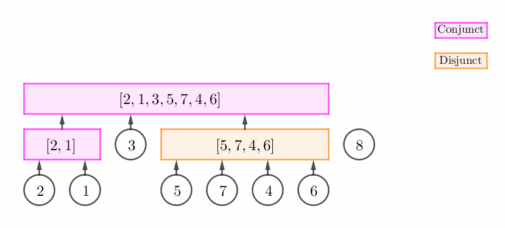
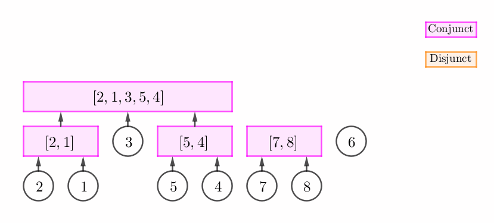
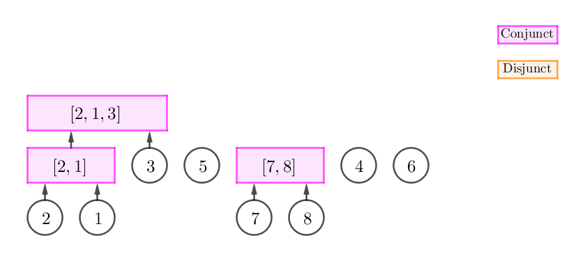

有一个 $n \times n$ 的网格，在上面共有 $n$ 个布丁怪兽，其中每行每列恰有一个布丁怪兽。
你需要求出，在网格中，一共有多少个完整的子正方形网格，满足这个子网格中每行每列恰有一个布丁怪兽 (换句话说，有多少个 $k \times k$ 的子网格 ($k$ 任取)，满足这个子网格中共有 $k$ 个布丁怪兽)。
第一行包含一个正整数 $n$ ($n \leq 3 \times 10^5$)，表示原网格的大小。
接下来 $n$ 行，每行包含两个正整数 $r_i, c_i$ ($1 \leq r_i, c_i \leq n$)，表示在第 $r_i$ 行第 $c_i$ 列有一个布丁怪兽。保证所有的 $r_i$ 互不相同，所有的 $c_i$ 互不相同。
输出一行一个整数，表示子正方形网格的个数。
由于每行每列恰有一个布丁怪兽，因此我们可以建立一个 $n$ 元排列 (置换) $p$，表示第 $i$ 行的布丁怪兽在第 $p_i$ 列。
考虑一个合法的子正方形网格，设它跨越的行编号为 $l \sim r$，则 $p_l, p_{l+1}, \cdots, p_r$ 在排序后应是连续的整数。
换句话说，一个合法的子正方形网格，对应排列 $p$ 的一个连续段。
因此，我们需要统计一个给定排列的连续段数量。
说起连续段，我们可以使用析合树 (DCT) 这一数据结构来处理。
我们考虑一个连续段在析合树中的刻画。
首先，如果一个连续段是本原连续段，则它对应析合树上的一个节点 (包括叶节点、析点 (Disjunct vertex)及合点 (Conjunct vertex))。
否则，它一定是一个度 (子节点个数) 大于 $2$ 的合点的一些但不是全部子节点的并。
设这个合点的度为 $D$，则这样的连续段个数应为 $\dfrac {D \left( D - 1 \right)} 2 - 1 = \dfrac {\left( D - 2 \right) \left( D + 1 \right)} 2$。
因此，整个序列的连续段个数，就等于它的析合树上的顶点个数，再加上每个合点对应的 $\dfrac 12 \left( D - 2 \right) \left( D + 1 \right)$ 的和 (其中 $D$ 为合点的子节点个数)。
于是下面就只需要构造出这个析合树就可以了。
由于前几篇题解都没有讲析合树的具体构造，这里简要提一下析合树的构造。
首先，析合树的构造是可以在线性时间内完成的，不过比较麻烦，这里只介绍一个 $O \left( n \log n \right)$ 的构造方法。
从左向右扫描整个排列，因此析合树中就类似一个中序遍历。我们用栈维护当前从根到最右边的叶节点的链。
当我们扫描到一个位置 $v$ 时，我们考虑当前位置和栈顶元素的关系，可以分为以下三类：
栈顶是一个合点 (Conjunct vertex)，而且 $p_v$ 和这个合点形成一个 "延续关系"。
这个时候，我们只需要将这个合点进行 "扩张"，然后将 $v$ 的父节点设为这个合点。如下图所示：
栈顶非可以直接扩张的合点 (即它可以是不能扩张的合点或析点)，但 $p_v$ 和栈顶构成一个连续段。
此时，我们可以建立一个新的合点 $C$，然后将原栈顶和 $v$ 的父节点都设为 $C$。如下图所示：
$p_v$ 和栈顶无法构成连续段。
此时，我们不断弹栈，直到栈中弹出来的所有元素 (一个后缀) 与 $p_v$ 可以构成连续段为止。容易发现，我们将会得到一个析点，如下图所示：
当然，有可能我们在不断弹栈的过程中，栈中弹出来的元素根本就无法与 $p_v$ 构成连续段，因此这时我们无法进行任何操作，并且还需要恢复栈中的元素。
当然，在一次更新 (这里的更新指的是情形 1 的合点扩张以及情形 2, 3 的添加新点) 完成，我们不能立即停止，还需要将所得的新点继续按照上述三条规则进行更新。
比如，上述情况 2, 3 的图，在更新完毕后，所得的新的合点 (或析点) 是可以和前面的点继续合并的。
这样一直持续下去，直到无法更新为止 (情形 3 的后半部分)，我们再将最后所得的点压入栈顶，就完成了位置 $v$ 的扫描。
我们来分析一下这样构造的时间复杂度：
注意到每次更新时，时间复杂度就等于连的边的个数，而由于析合树是树，因此边数是 $O \left( n \right)$ 的，再加上单调栈的线性，在有更新的部分时间复杂度就是 $O \left( n \right)$ 的。
但是如果更新不了呢？比如整个排列是单的 (simple) 呢？这样每次都要搜索整个栈 (且还不能 pop)，时间复杂度就到 $O \left( n^2 \right)$ 了！
那有什么比较好的方法预先知道在扫描每个 $v$ 的过程中，什么时候可以 break 呢？
我们最后能求出，在扫描 $v$ 的过程中，可以产生合并的最左的端点 $L_v$ 是多少。如果知道了这个，我们在更新过程中一直循环到左端点小于 $L_v$ 时再 break，这样每次合并都是成功的，于是从而该次合并的时间复杂度就等于连的边的数量。
可以发现，这就是 [CTSC2018]青蕈领主 的 $L_j$ 数组。
形式化地，我们需要寻找最小的 $l$，使得 $\max \left\{ p_l, p_{l+1}, \cdots, p_v \right\} - \min \left\{ p_l, p_{l + 1}, \cdots, p_v \right\} = v - l + 1$。
话说，看到这个形式是不是感觉到很熟悉呢？是啊，线段树入门练习题啊！这个形式在 [Codeforces407E]k-d-sequence 中就出现过！
(ps1: 由于是排列，因此上式不会小于 $v - l + 1$，因此这里的 "等号" 和 "小于等于号" 是本质相同的)
(ps2: 其实，如果只是为了做这道题，直接使用线段树统计区间最小值个数就可以了，不过这里为了介绍析合树的构造，因此就不停止了)
注意到一个序列的后缀 $\max$ 和后缀 $\min$ 是随着左端点的增加而单调递减/单调递增的，于是可以使用单调栈来维护 $\max$ 的区间变化形态，然后最后 "在线段树上二分" 就能找到所需的 $L_v$ 了。具体过程详见 那一篇题解，这里就不赘述了。
最后介绍一些小细节，如更新的时候，三种情况的判定：
对于第一种情况，我们需要判定是否形成 "延续关系"。一种 simple 的想法是直接判定栈顶和当前区间是否构成连续段 (ps: 由于是静态的判定，可以通过两次 RMQ 来解决，是 $O \left( n \right)$/$O \left( n \log n \right)$ 的)。不过，这个判定是有问题的：
考察上述情况 2 的图，两个区间分别是 $\left[ 7, 8 \right]$ 和 $\left[ 6 \right]$，它们合在一起构成一个连续段 $\left[ 7, 8, 6 \right]$，而 $\left[ 6 \right]$ 不能使这个合点 $\left[ 7, 8 \right]$ 进行 "扩张"。
正确的方法是，对于一个合点，在创建它的时候，一定是两个区间并起来的，设其为 $\left[ l, mid \right]$ 和 $\left[ mid + 1, r \right]$。在后续的 "扩张" 中，正确的操作是：设加入的区间为 $\left[ l_0, r_0 \right]$，直接判断 $\left[ mid + 1, r_0 \right]$ 是否是连续段 (当然需要保证栈顶是个合点)，如果是，就可以进行扩张。
这是因为，不妨设这个合点是递增的，因此如果 $\left[ mid + 1, r_0 \right]$ 是连续段，则 $\left[ l_0, r_0 \right]$ 一定与原先合点相邻且比其大，这是因为 $\left[ mid + 1, l_0 - 1 \right]$ 中值域最小者减一 ($min - 1$) 一定在区间 $\left[ l, mid \right]$ (的值域) 上，于是 $\left[ l, r_0 \right]$ 也是连续段，且 $\left[ l_0, r_0 \right]$ 可以对这个合点进行扩张。
对于第二种情况，是相对比较简单的，只需要检查两个区间整体是否构成连续段。当然最后不要忘记记录下 $mid$ 的值哦~ (以便第一种情况使用)
对于第三种情况，需要在里面套一个 for/while 循环，直到这个区间整体构成连续段。
于是，到此位置，我们成功使用单调栈 + 线段树 + ST 表的算法完成了析合树的构造，总时间复杂度 $O \left( n \log n \right)$。
#include <bits/stdc++.h>
#define lg2 std::__lg
typedef std::pair <int, int> pr;
const int N = 600054;
int n;
int p[N];
inline void up(pr &x, const pr &y) {x.first > y.first ? x.first = y.first : 0, x.second < y.second ? x.second = y.second : 0;}
namespace DCTree {
enum type {leaf, disjunct, conjunct} I[N];
pr st[20][N];
int stack1[N], stack2[N], stack[N];
int cnt, root, left[N], mid[N], right[N];
void build_sparse_table() {
int i, j, k = n; pr *f, *g = *st;
for (j = 0; 1 << (j + 1) <= n; ++j) {
f = g, g = st[j + 1], k -= 1 << j;
for (i = 1; i <= k; ++i)
up(g[i] = f[i], f[i + (1 << j)]);
}
}
inline bool is_consecutive(int L, int R) { // [L, R)
int c = lg2(R - L); pr ans = st[c][L]; up(ans, st[c][R - (1 << c)]);
return ans.second - ans.first == R - L - 1;
}
namespace ST {
#define segc int M = (L + R - 1) >> 1, lc = id << 1, rc = lc | 1
struct node {int v, tag;} x[N * 4];
void build(int id, int L, int R) {
x[id].v = L, x[id].tag = 0;
if (L == R) return;
segc; build(lc, L, M), build(rc, M + 1, R);
}
void add(int id, int L, int R, int ql, int qr, int v) {
if (ql <= L && R <= qr) {x[id].v += v, x[id].tag += v; return;}
segc;
if (ql <= M) add(lc, L, M, ql, qr, v);
if (qr > M) add(rc, M + 1, R, ql, qr, v);
x[id].v = std::min(x[lc].v, x[rc].v) + x[id].tag;
}
int find_suf(int id, int L, int R, int v, int cv = 0) {
if (cv + x[id].v > v) return -1;
if (L == R) return L;
segc, p = find_suf(lc, L, M, v, cv += x[id].tag);
return ~p ? p : find_suf(rc, M + 1, R, v, cv);
}
}
int pa[N], fc[N], nc[N], deg[N];
inline void link(int x, int px) {pa[x] = px, nc[x] = fc[px], fc[px] = x, ++deg[px];}
void build() {
int i, l, top1 = 0, top2 = 0, top = 0, &v = root; cnt = n;
for (i = 1; i <= n; ++i) st[0][i] = pr(p[i], p[i]), left[i] = right[i] = i, I[i] = leaf;
build_sparse_table(), ST::build(1, 1, n);
for (i = 1; i <= n; ++i) {
for (; top1 && p[i] > p[ stack1[top1] ]; --top1)
ST::add(1, 1, n, stack1[top1 - 1] + 1, stack1[top1], p[i] - p[ stack1[top1] ]);
for (; top2 && p[i] < p[ stack2[top2] ]; --top2)
ST::add(1, 1, n, stack2[top2 - 1] + 1, stack2[top2], p[ stack2[top2] ] - p[i]);
stack1[++top1] = stack2[++top2] = i;
l = ST::find_suf(1, 1, n, i);
for (v = i; top && left[ stack[top] ] >= l; --top)
if (I[ stack[top] ] == conjunct && is_consecutive(mid[ stack[top] ], i + 1))
right[ stack[top] ] = i, link(v, stack[top]), v = stack[top];
else if (is_consecutive(left[ stack[top] ], i + 1)) {
I[++cnt] = conjunct, link(stack[top], cnt), link(v, cnt);
left[cnt] = left[ stack[top] ], right[cnt] = i, mid[cnt] = left[v], v = cnt;
} else {
I[++cnt] = disjunct, link(v, cnt);
for (; top && !is_consecutive(left[ stack[top] ], i + 1); --top)
link(stack[top], cnt); link(stack[top], cnt);
left[cnt] = left[ stack[top] ], right[cnt] = i, v = cnt;
}
stack[++top] = v;
}
}
}
int main() {
int i, u, v; long long ans;
scanf("%d", &n);
for (i = 0; i < n; ++i) scanf("%d%d", &u, &v), p[u] = v;
DCTree::build(), ans = DCTree::cnt;
for (i = n + 1; i <= DCTree::cnt; ++i)
if (DCTree::I[i] == DCTree::conjunct && (v = DCTree::deg[i]) > 2)
ans += (v - 2ll) * (v + 1ll) / 2;
printf("%lld\n", ans);
return 0;
}
坑1：构建析合树时，第一种更新记得判定的是 $\left[ mid + 1, r_0 \right]$ 而不是 $\left[ l, r_0 \right]$。
坑2：由于析合树的点数的上限是 $2 n - 1$，因此空间需要开到两倍。